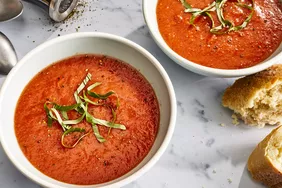

Soup

This tomato soup recipe is simple, quick, and perfect to make when tomatoes are ripe in gardens and farmers' markets for a delicious summertime treat. Delicious with garlic bread or a grilled cheese sandwich.
One spoonful of tomato soup has the power to automatically transport you back to your childhood. The tasty soup is the ultimate comfort food, especially when it's homemade.
This tomato soup recipe uses fresh tomatoes and will remind you of your mom's famous cooking. Sure the can of tomato soup works in a time crunch, but nothing beats the delicious flavors of a soup you made from scratch with fresh ingredients. So say goodbye to canned soup forever and hello to your new favorite tomato soup recipe.
Ingredients
- tomato
- noddles
- cream
- broth
Steps
- Boil the tomatoes, onion, garlic, and broth.
- Run the mixture through a food mill into a large bowl.
- Make a roux.
- Add the tomato mixture and season.